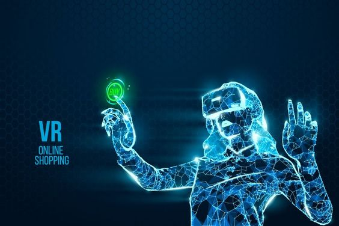

The Impact of Virtual Reality on Education
Virtual reality (VR) technology has emerged as a transformative tool in the field of education, offering immersive learning experiences that transcend traditional teaching methods. By simulating real-world environments and scenarios, VR enables students to engage with course material in a hands-on and interactive manner, enhancing their understanding and retention of key concepts.
One of the most significant benefits of VR in education is its ability to cater to diverse learning styles and preferences. Visual learners can benefit from 3D models and simulations, auditory learners can engage with interactive audio content, and kinesthetic learners can interact with virtual environments through movement and interaction. This personalized approach to learning fosters greater engagement and participation among students, leading to more effective learning outcomes.
Moreover, VR allows students to explore subjects that may be otherwise inaccessible or impractical to experience in a traditional classroom setting. For example, students studying history can virtually visit ancient civilizations, witness historical events firsthand, and gain a deeper understanding of the past. Similarly, students learning about complex scientific concepts can visualize abstract phenomena through immersive simulations, making learning more tangible and memorable.
Furthermore, VR technology facilitates collaborative learning experiences, enabling students to work together in virtual environments regardless of their physical location. Through virtual classrooms and collaborative projects, students can collaborate, communicate, and problem-solve as a team, fostering valuable skills such as teamwork, communication, and critical thinking.
As VR technology continues to evolve and become more accessible, its potential to revolutionize education is boundless. By harnessing the power of immersive technology, educators can create dynamic and engaging learning experiences that inspire curiosity, creativity, and lifelong learning in students.